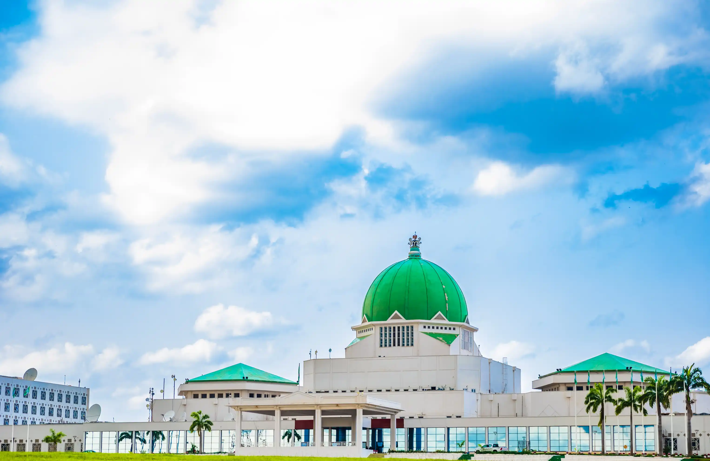

My favorite city is Abuja, the Federal Capital Territory of Nigeria. Abuja is geographically located at the center of Nigeria, making it very much accessible from all parts of the country. I do love how serene and well planned the city the is.
My favorite spot is the National Assembly. A huge symbol of governance, democracy and power.
